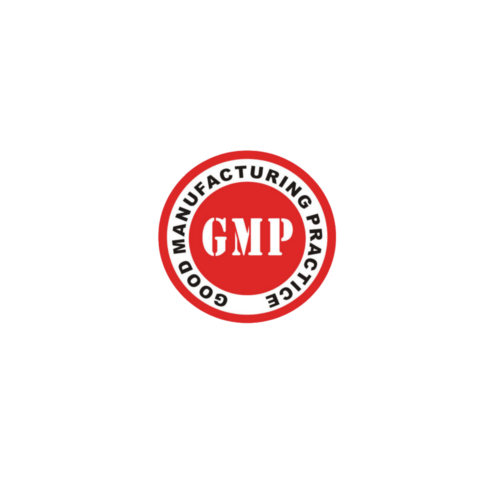
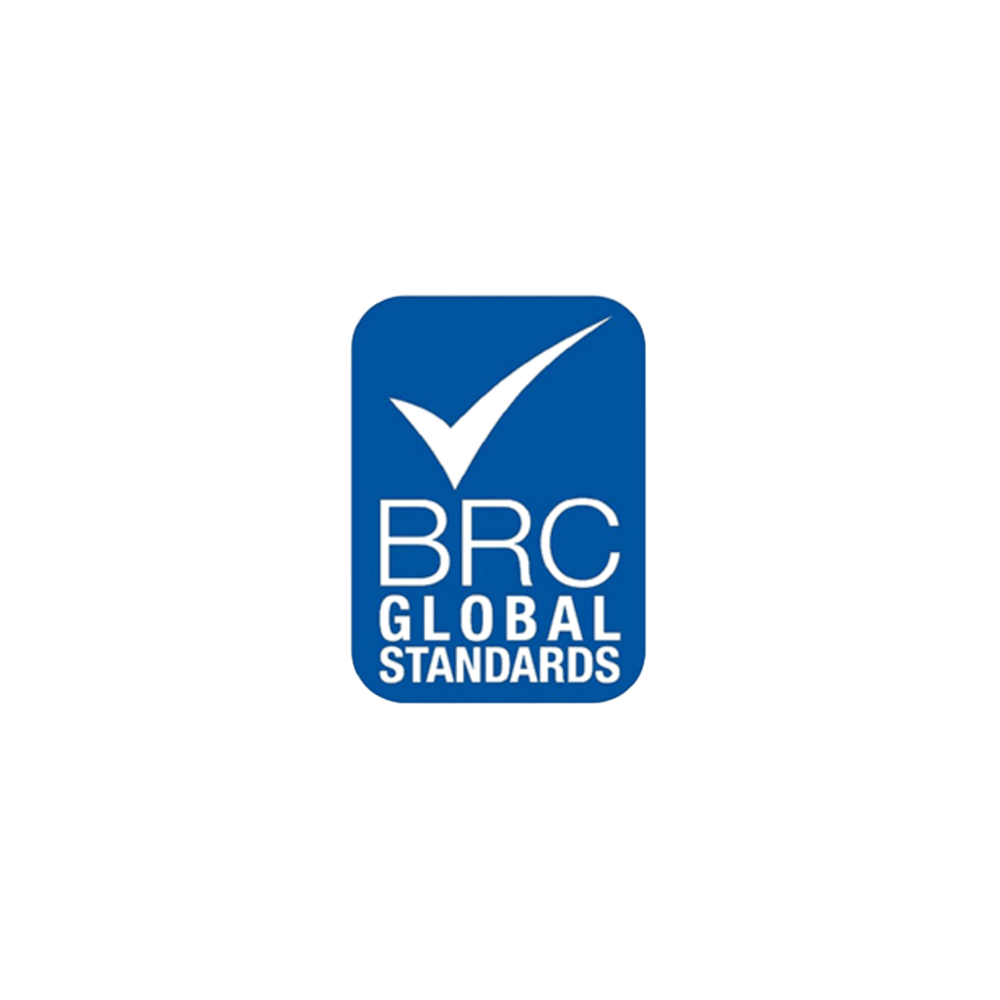
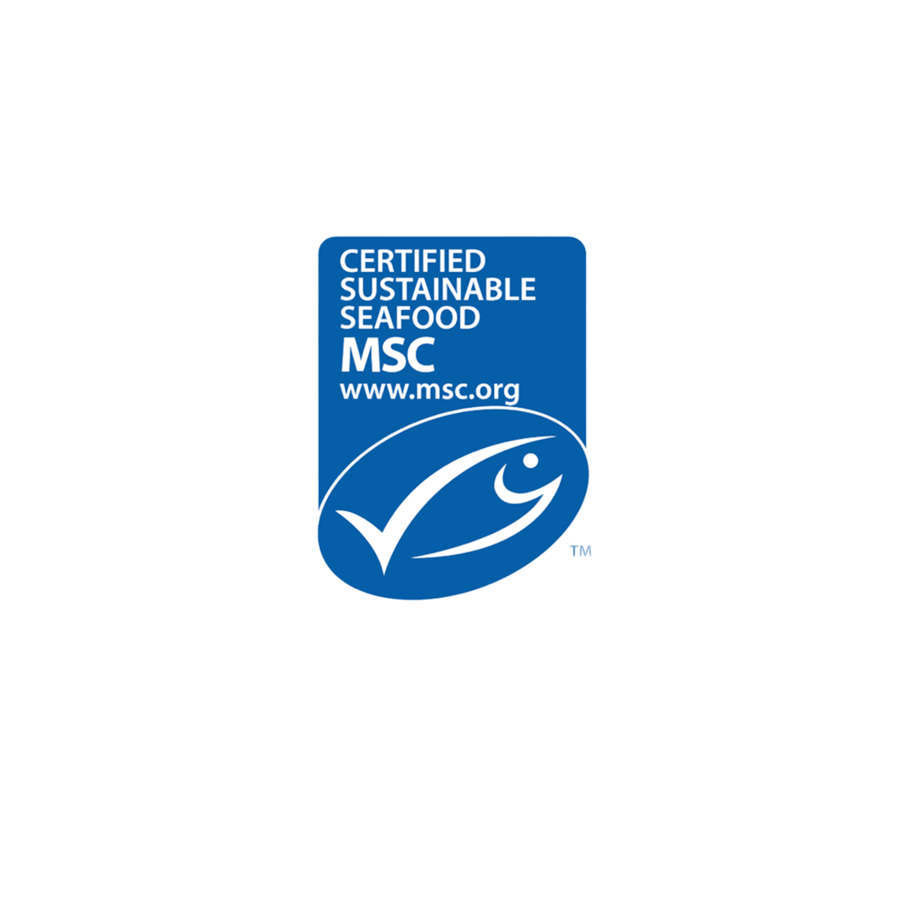
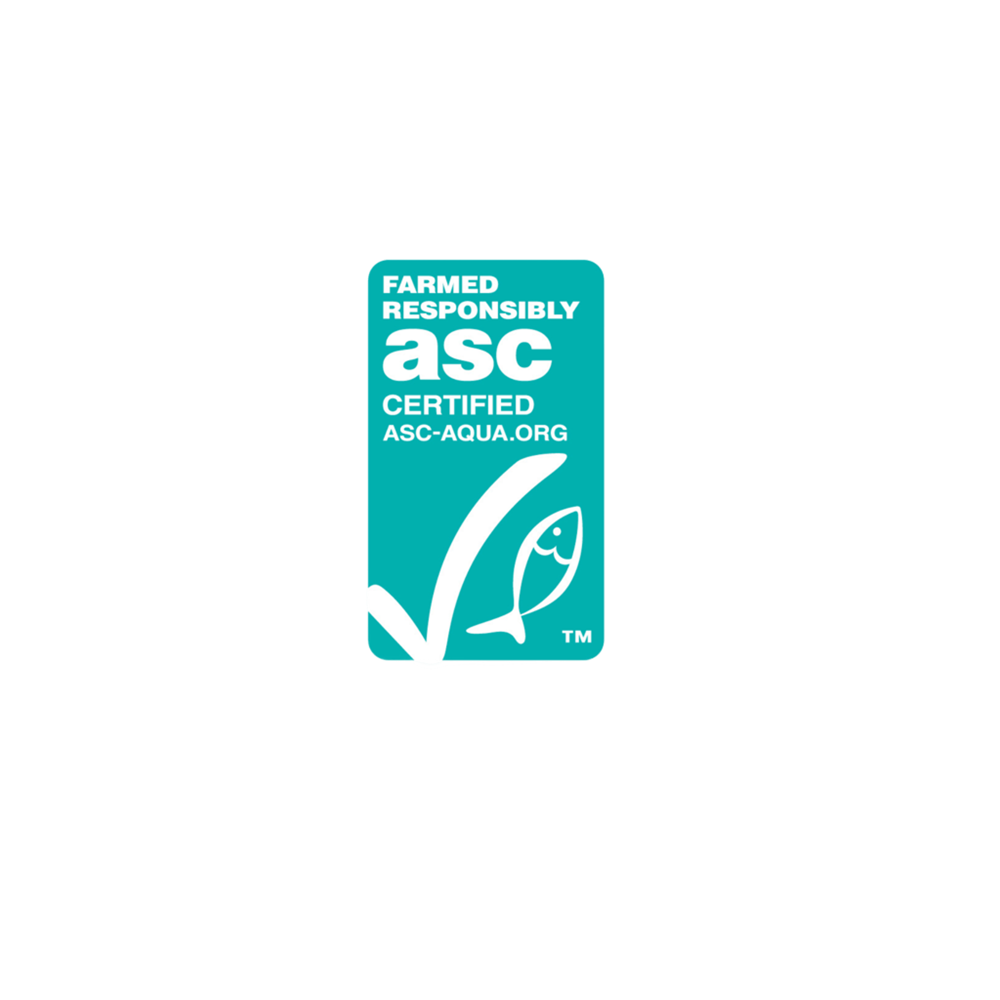
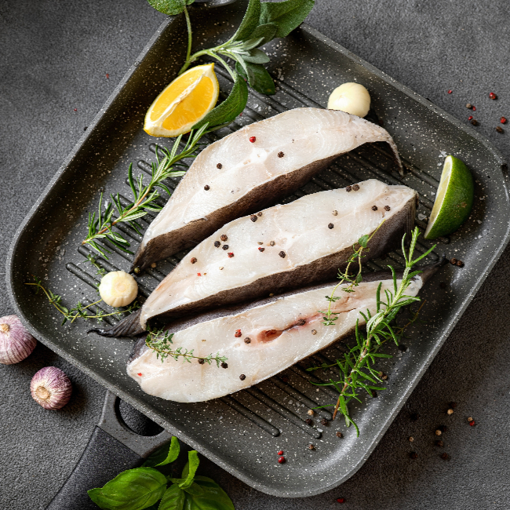
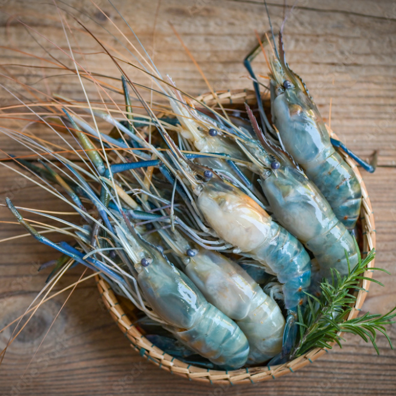

เกี่ยวกับเรา
เกี่ยวกับเรา

BANGKOK SEAFOOD มุ่งมั่นยกระดับอาหารทะเลแช่แข็งไทยสู่มาตรฐานระดับโลก ด้วยเทคโนโลยีและความเชี่ยวชาญที่ทันสมัย
เราให้ความสำคัญสูงสุดกับความปลอดภัยทางอาหาร (Food Safety) และคุณภาพที่สม่ำเสมอ

มาตรฐานการผลิตที่ดี
วิเคราะห์อันตรายและควบคุมจุดวิกฤต

มาตรฐานความปลอดภัยอาหารระดับโลก
รับรองฮาลาลสำหรับผู้บริโภคมุสลิม

รับรองการประมงที่ยั่งยืน

รับรองการเพาะเลี้ยงสัตว์น้ำที่ยั่งยืน
ตรวจสอบมาตรฐานแรงงานและจริยธรรมธุรกิจ
กรมประมง กระทรวงเกษตรและสหกรณ์
สำนักงานคณะกรรมการอาหารและยา






BANGKOK SEAFOOD พร้อมมอบสิ่งที่ดีที่สุดให้กับธุรกิจของคุณ